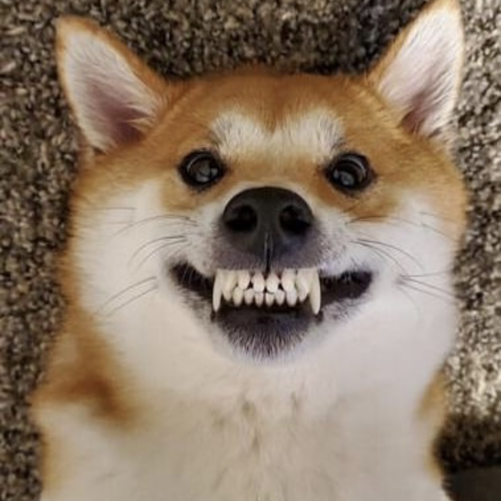
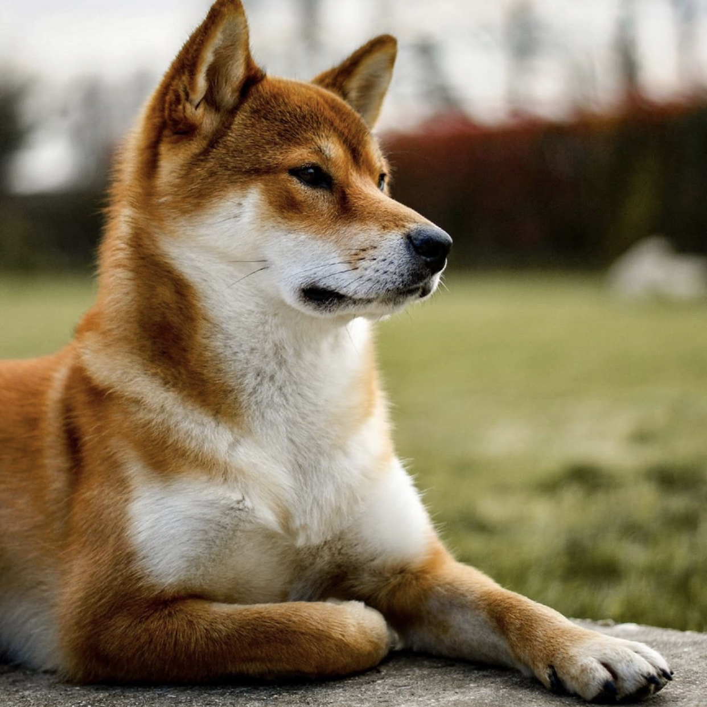
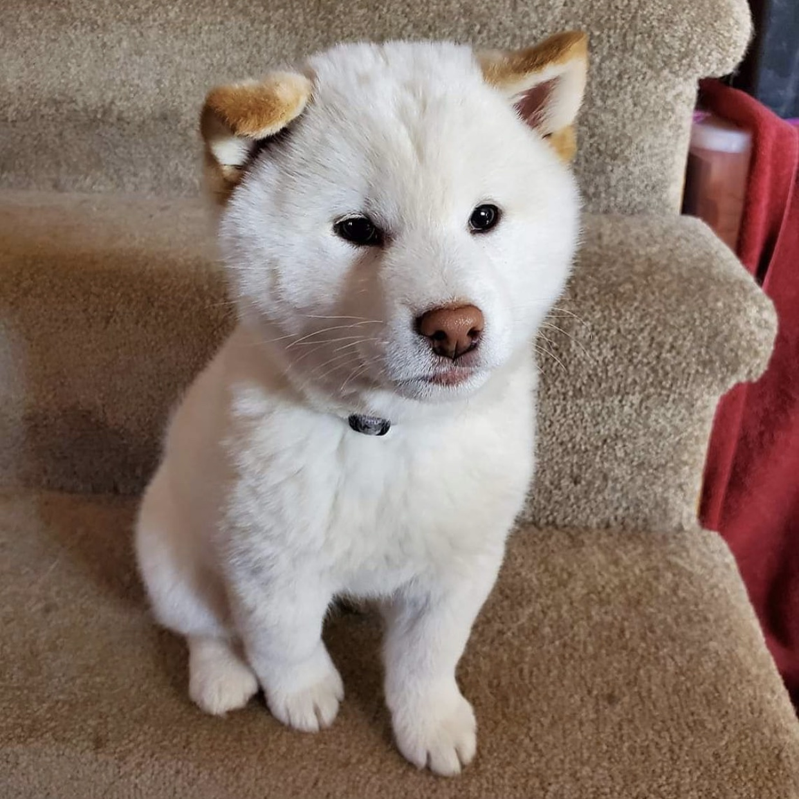

The Shiba Inu dog breed was originally bred to flush birds and small game, and was occasionally used to hunt wild boar. He is one of Japan's six native breeds: Akita (large), Kishu, Hokkaido, Kai, Shikoku (medium), and Shiba (small). He is known for his spirited personality, small upright ears, and cat-like agility.

The Shiba Inu is known for a bold, fiery personality. The Japanese have three words to describe the breed's mental traits: kaani-i (spirited boldness), ryosei (good nature), and soboku (alertness). Combined, these traits make up the interesting, intelligent, and strong-willed temperament of this breed.

With his prick ears, squinty eyes, and curly tail, this breed from the Land of the Rising Sun looks like a fox, or perhaps a stuffed toy. He is neither. He is the Shiba Inu, the smallest — and possibly the most ancient — of six spitz dogs that originate in Japan.